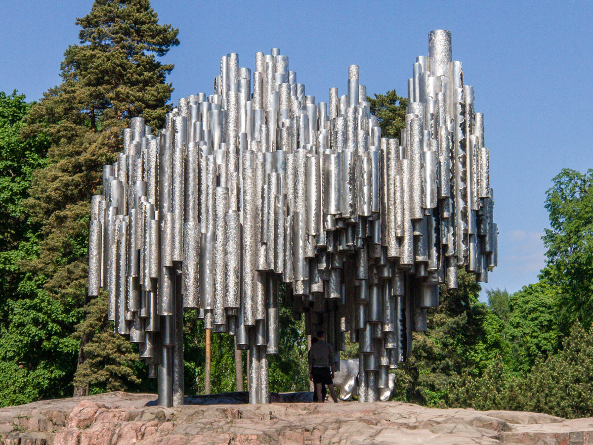
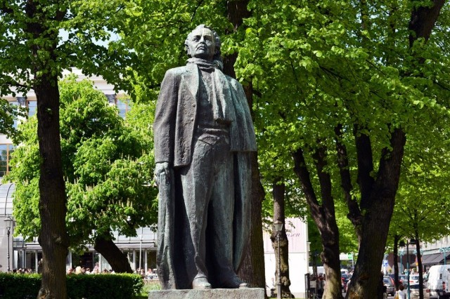
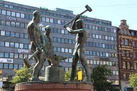

Monuments/Statues
Sibelius monument
"Sibelius Park features the world-famous composer Jean Sibelius (1865-1957) monument, by Eila Hiltunen, 1967. The Sibelius Monument was unveiled on 7th. September 1967."
See here for more!Marshal Mannerheim

"Baron Carl Gustav Emil Mannerheim (1867-1951) was Marshal of Finland, regent (1918-19) and President of the Republic (1944-46). Their military and governmental merits Mannerheim is therefore one of the most significant figures in Finnish 20th-century history. His Birthday June 4th has been the flag anniversary of the Defense Forces since 1942."
See here for more!Aleksis Kivi statue

"Aleksis Kivi (1834-1872) is a Finnish national writer. Made by Wäinö Aaltonen (1894-1966) a bronze memorial statue was unveiled on 10 October 1939. The statue's completion was preceded by a two-stage sculpture competition in 1928-30."
See here for more!Elias Lönnrot monument

"The Lönnrot Memorial Competition was organized by the Finnish Literature Society in 1899. Emil Wikström (1864-1942) commissioned the sculpture."
See here for more!J.V.Snellmann monument

"The Snellman Memorial Competition was in 1913 and won jointly by Emil Wikström (1864-1942) and Eliel Saarinen (1873-1950)."
See here for more!Eino Leino statue
"The sculpture is characteristically expressive and effective for Leppänen's production seeking character. The bronze memorial with its stands is 4.2 meters high."
See here for more!Statue of Peace

"This statue of peace was erected by the Finnish people on April 6, 1968 as a symbol of peaceful coexistence and friendship between Finland and the Soviet Union."
See here for more!The statue of Three Blacksmith
"The statue was commissioned by the Pro Helsingfors Foundation and donated to the City of Helsinki. The sculpture was unveiled on December 2, 1932."
See here for more!